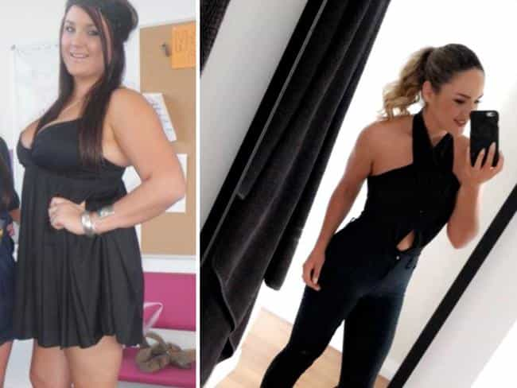

< < < Back
If You Can Only Lose Weight To Get Revenge, Something Is Wrong With You – Return Of Kings
Have you noticed the rise in “revenge body” stories recently? Google Trends certainly has. Formerly overweight or plain obese women have been flocking to news outlets, bragging about how they managed to finally get rid of the pounds after their boyfriend, fiancé, or husband dumped or criticized them. The male exes are then routinely lambasted for being “mean” and not “deserving” the newly transformed women they used to have.
Here is some of the tripe that has graced newspapers and computer screens of late:
On the one hand, these women losing weight might seem like the exact thing Return Of Kings has been preaching for years—stopping the proliferation of human whales. Conversely, however, it demonstrates a kind of toxic self-absorption. Yes, the women may look a whole lot better, some of them even being hot. But you end up asking yourself why they didn’t bother losing weight in the first place. Why couldn’t they have done it for their partner, to show him their best self? Or for their children?
If a woman’s definition of transformation and self-improvement depends on making the man she kept herself fat for jealous, the problem is almost certainly with her. In nearly all these cases where a man left an overweight or obese woman, he had better options and chose to take them. Any self-respecting man would, too. In addition, it is doubtful, perhaps even impossible that these women would have lost weight out of love or consideration for their boyfriend, fiancé, or husband. Everything depended on the rage that developed after they were rejected.
This article should serve as a warning to anyone who dates or wants to date a former fatty. Whilst the superficial package may seem fine, you’re potentially dealing with a powder-keg of female victimhood. If revenge, not a self-directed effort at improvement, has been the driving force behind her changes in life, you may have a hard time with this girl in many other areas.
Social and mainstream media will always reward this female narcissism
Did you really need thoughts of revenge to lose weight?
One thing I did not know before researching for this article was that Khloe Kardashian (the mannish Kardashian sister) hosts a show called Revenge Body. This shining light of television consists of women, with a gay man also thrown in, getting “revenge” on their exes by finally exercising and eating right. The shifting of responsibility engaged in by this show mirrors the very perverse social media validation women get for losing weight only after being dumped.
At no point do even small numbers of people appear to say things like, “Maybe he dumped you because you didn’t respect him enough to take care of yourself.” Worse still are the attempts of the former fatties to blame “toxic” people, especially the ex-partner, for them originally being overweight or obese. Again, while many of these women may now be bangable, their supreme lack of personal responsibility (remember, all their changes depended on someone else’s actions) may make them about as suitable for a long-term relationship as they were when they weighed 100 pounds more.
A man should never regret dumping a woman who falls below his expectations

Losing weight is only one part of restoring women.
You are going to meet exes who have improved themselves (or seem to have improved themselves) since you dumped them. If it’s not a law or fact of life, it’s close to it. In my life, most of the positive changes I have seen in my ex-girlfriends have been oriented around their personalities, whether an apparent return to the personality that once attracted me or sometimes even a vibe I had never seen in them before.
Though I might briefly ponder what could have been, I quickly snap myself out of that thought pattern. The causal factors behind a girl’s potential self-improvement during and after a relationship are usually very different. In fact, in the case of the “during” part, these factors frequently don’t exist. She likely wouldn’t have bettered herself without a man leaving her, so moving on was the right choice.
The same goes for a man whose girlfriend has physically improved since he dumped her. Given the truly poisonous presence of modern-day feminism, it is highly unlikely that a woman you dumped after she gained weight was going to exercise and eat right for you. This is not to say that you and I cannot improve our chances of preventing women from sliding down physically and emotionally. But just as an overweight woman can regard herself as a victim during her relationship (“Why can’t he accept me for who I am?”), that same woman can regard herself as a victim of rejection when she loses weight to spite her ex-partner.
By all means bang a girl who has shed her excess pounds. Just be careful and judicious about dating her.
Read More: 35 Pretty Girls Who Became Fat And Ugly